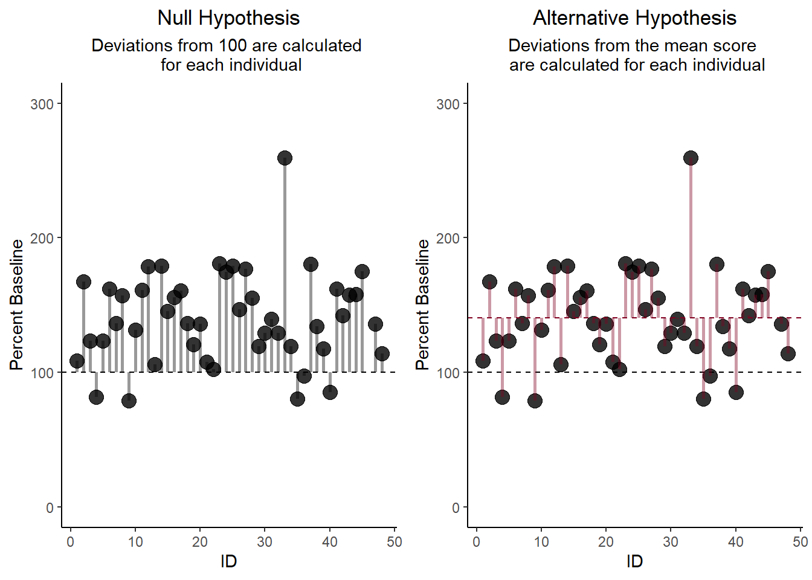
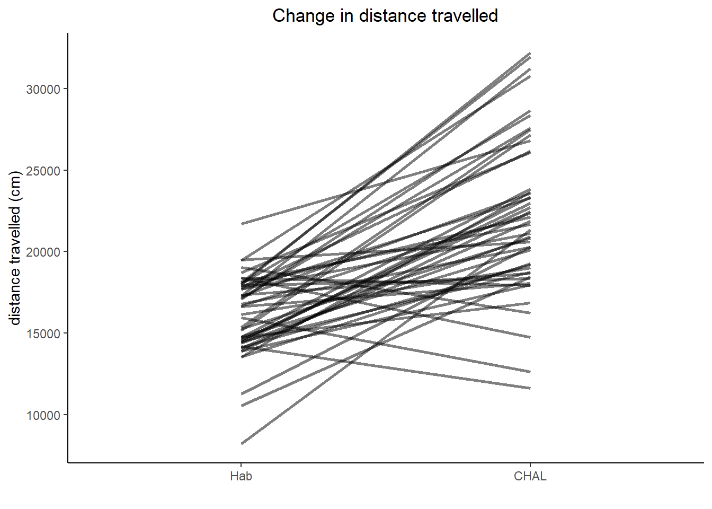
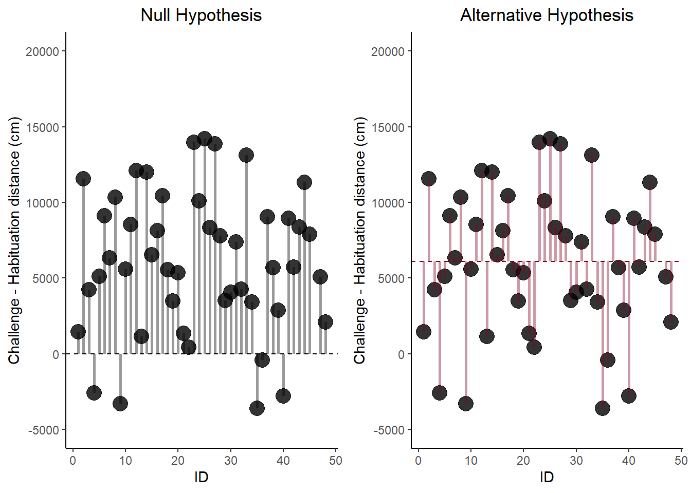

The General Linear Model
The GLM is a family of analytic approaches that involves fitting lines to data points.
The underlying formula for the GLM:
$$ \dfrac{signal}{noise} $$ Or, in other words,
$$ \dfrac{systematic\ variance}{error\ variance} $$
- The “statistic” that you see reported represents this ratio.
- e.g. t (15) = 4.51, p = 0.02
- 4.51x more systematic variance than error variance
- 2% chance that these sets of scores belong to a common parent distribution
GLM can be broadly divided into 3 families of analyses:
1. t-tests
- involve comparisons between two groups
- require a categorical IV and a continuous DV
-
ANOVA (& cousins: MANOVA,ANCOVA,MANCOVA)
-
Regressions
Types of t-tests:
There are 3 distinct yet related types of t-tests, each used for unique scenarios:
- one-sample t-test
- paired samples t-test (aka “dependent samples”)
- independent samples t-test
One sample t-test
- As the name implies, involves a situation where you are testing one group of individuals against a single “known” value.
- Common example in the field of behavioural neuroscience would be comparing behaviour to individual baseline measurements.
$$ One\ Sample\ t = \dfrac {\bar{X} - \mu}{s / \sqrt(n)} $$
WHERE
- “X bar” = mean of your sample
- “mew” = the population mean you are testing against
- “s” = standard deviation of the sample you tested
- “n” = the sample size
Paired Samples t-test
- Involves comparing multiple measurements from a single sample of people (usually)
- Sometimes used for “matched” samples (e.g. twins in human studies)
$$ Paired; Samples; t = \dfrac {\Delta \bar{X}}{\Delta s / \sqrt(n)} $$
WHERE
- “Delta X bar” = Change in the mean between the two measurements
- “Delta s” = Change in standard deviation between the two measurements
- “n” = sample size
Independent Samples t-test
- involves comparing two unrelated groups.
$$ t = \dfrac {\bar{X1} - \bar{X2}} {SD_{pooled}} $$ WHERE
- “X bar_1” = The mean of the first group (control)
- “X bar_2” = The mean of the second group (test)
- “SD_pooled” = The pooled standard deviation of the two groups
Examples using EB_Nicotine_Rats
Link to explaination about data used in the examples below
Link to raw data
Below are codes to execute each type of t-test in R.
One sample t-test in R
data <- read_csv("EB_Rats_Nicotine_Sensitization.csv")
data$CHALpercBL <- (data$CHAL / data$Hab) * 100
t.test(data$CHALpercBL, mu = 100)
##
## One Sample t-test
##
## data: data$CHALpercBL
## t = 8.1908, df = 46, p-value = 0.000000000155
## alternative hypothesis: true mean is not equal to 100
## 95 percent confidence interval:
## 130.6810 150.6741
## sample estimates:
## mean of x
## 140.6776
Written result:
Distance travelled on the challenge day was significantly higher than indivdual baseline measurements (one sample t(46) = 8.19, p <0.001).
Graphical representation of this analysis:
The deviations (aka the “error variance”) for each model are compared. If the statistic is significant (p < 0.05), it would indicate that the mean is a significantly better predictor of the data than the null model (in this case, the mean).
Paired samples t-test in R
Hab <- data$Hab
Chal <- data$CHAL
t.test(Chal, Hab, paired = TRUE, var.equal = TRUE)
##
## Paired t-test
##
## data: Chal and Hab
## t = 8.9119, df = 46, p-value = 0.00000000001391
## alternative hypothesis: true mean difference is not equal to 0
## 95 percent confidence interval:
## 4726.958 7485.298
## sample estimates:
## mean difference
## 6106.128
Written result:
Rats increased distance travelled between the habituation session and the challenge day (paired t(46) = 8.91, p < 0.001).
Graphical representation of this analysis
A paired-samples t-test is really just a one-sample t-test where the group mean (Alternative model) is compared to the null model (zero).
One way to think about vizualizing this statistical approach would be to plot individual changes in distance travelled between the two days of testing. The statistic corresponds to the slope of the lines - “on average, are the lines sloping upwards, downwards, or not changing?”
Another way to vizualize the paired samples t-test would be to show the “Null model” with deviations from the individual points to zero, compared to the “Alternaltive model”, which shows deviations to the group mean change (6106cm):
Independent Samples t-test in R
t.test(Chal~PREhorm, data=data, var.equal = TRUE)
##
## Two Sample t-test
##
## data: Chal by PREhorm
## t = -4.8159, df = 45, p-value = 0.00001694
## alternative hypothesis: true difference in means between group 0 and group 1 is not equal to 0
## 95 percent confidence interval:
## -7824.757 -3209.855
## sample estimates:
## mean in group 0 mean in group 1
## 19343.65 24860.96
Written result:
On the challenge day, rats treated with EB during the “induction” phase of sensitization travelled longer distances than those treated with OIL (t(45) = 4.82, p < 0.001).